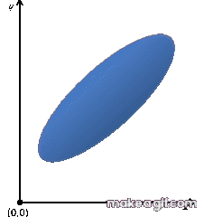
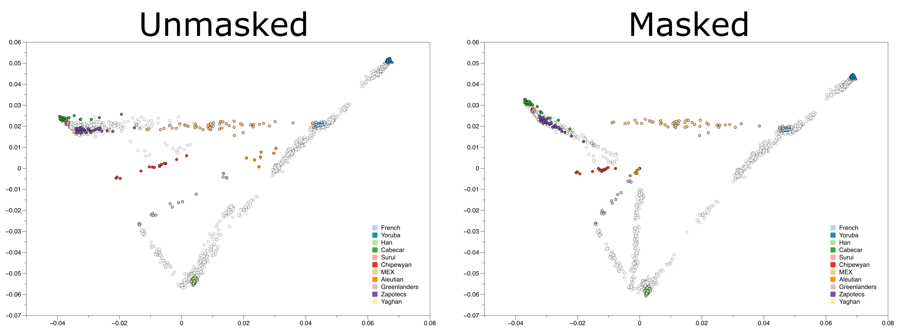
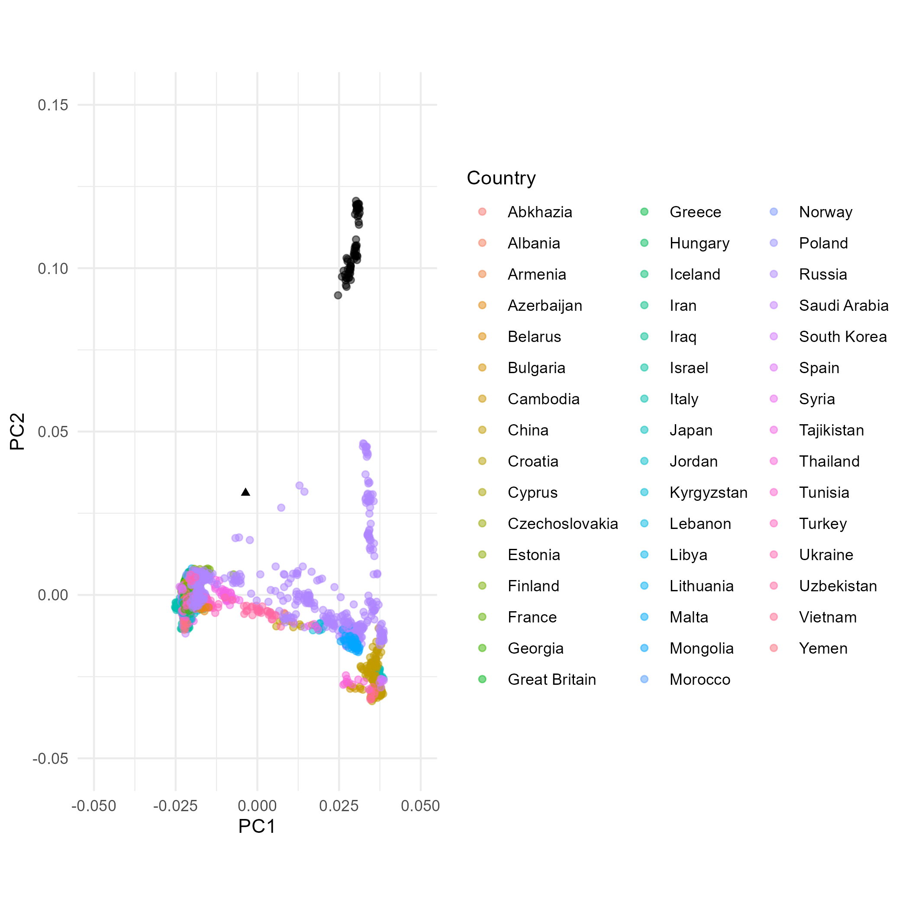

# download Trident v1.4.0.3 binary
wget https://github.com/poseidon-framework/poseidon-hs/releases/download/v1.4.0.3/trident-Linux
# rename to trident
mv trident-Linux trident
# make it executable
chmod +x trident
# run it
./trident -h6 Dimensionality reduction using PCA and MDS
7 Theory
Comparison of PCA and MDS
| PCA | MDS | |
|---|---|---|
| Input | original data matrix / similarity matrix | pairwise distance matrix |
| Focus | captures maximum variance in data | preserves pairwise distances |
| Missing data? | Fill-in OR projection | Not an issue if using summary statistics, but this hides the uncertainty of the statistic |
7.1 Rationale
The datasets used in human ancient DNA analysis are often extremely multidimensional, often including data from thousands of individuals, across hundreds of thousands (or millions!) of single nucleotide polymrphisms (SNPs) (Mallick et al. 2023). Even when choosing to summarise this genome-wide information to single statistics of genetic similarity (e.g. with Outgroup F3), a similarity matrix across individuals can become very large when comparing across hundreds of individuals. As the name implies, dimensionality reduction methods can reduce the number of dimensions in the underlying data, while also aiming to minimise the loss of information. The two such methods we will focus on in this tutorial are Principal Component Analysis (PCA) and Multi-Dimensional Scaling (MDS). Both methods reveal structure within the dataset, and part of that structure is due to shared population history between individuals/populations. It is for that reason that both these methods are indespensible parts of an archaeogeneticist’s toolkit.
Mallick, Swapan, Adam Micco, Matthew Mah, Harald Ringbauer, Iosif Lazaridis, Iñigo Olalde, Nick Patterson, and David Reich. 2023. “The Allen Ancient DNA Resource (AADR): A Curated Compendium of Ancient Human Genomes,” April. https://doi.org/10.1101/2023.04.06.535797.
7.2 Introduction to dimension reduction
When using either of these methods, we are essentially representing the data on a new set of orthogonal axes, with its origin in the center of the data. In PCA we typically use the original data for this transformation (i.e. the genotype matrix), and attempt to find the axes that capture the most variation among the samples. A covariance matrix (i.e. a similarity matrix) is often calculated and used as a useful intermediate step in PCA. Instead, in MDS we start with a pairwise distance matrix (typically a matrix of 1-F3), and attempt to find a spatial representation that best captures the distances between points.

The results of both of these methods are (usually) a 2 dimensional plot in which the distances between individual points roughly correlates to the genetic distance between these individuals. Therefore, genetically similar individual will be plotted close to one another, and further away from individuals that are more genetically dissimilar.
7.3 The problem with missing data
A recurring issue when analysing ancient DNA is the high degree of missing data (i.e. missingness). We often apply a minimum coverage filter to our datasets: A generally accepted rule-of-thumb for the 1240K dataset is a minimum of 15 000 covered (i.e. non-missing) SNPs. Another way to express this cutoff is to say that we will “happily” analyse data that is missing a genotype call in 98.8% of all SNPs in the dataset! So how does this high rate of missingness affect MDS and PCA?
7.3.1 MDS
Missingness does not affect MDS as adversely as it does PCA, on account of the use of a pairwise distance matrix of 1-F3. This matrix will only have missing values in cases where there is no overlapping coverage between two individuals/populations used in an F3 statistic. Instead, the issue with MDS is that all F3 statistics are treated as equally reliable, regardless of their associated error bar.
7.3.2 PCA
Unlike MDS, PCA is severely affected by missing data. During the rescaling of the data around its own mean values, missing data is “filled-in” to the mean value (mean imputation). This can cause points to shift towards the origin by a distance relative to the degree of missingness.
Below is a plot of the results of PCA on a dataset of differnt worldwide populations (Reich et al. 2012). In an attempt to limit the effects of colonial admixture on the studied Native American populations, the authors masked parts of the genomes of Native Americans that matched the European or African populations in their dataset, replacing those genotypes with missing data.
Reich, David, Nick Patterson, Desmond Campbell, Arti Tandon, Stéphane Mazieres, Nicolas Ray, Maria V Parra, et al. 2012. “Reconstructing Native American Population History.” Nature 488 (7411): 370–74.

As you can see, individuals whose genotypes were masked are shifted towards the plot’s origin. So how can we use PCA with ancient samples that have high degrees of missingness? The answer is by using a Least Squares Projection, a.k.a. lsqproject!
7.4 Projection
The idea of projection is simple, and applies similarly to both PCA and MDS. In PCA, you use a subset of the dataset to calculate your axes of variation, and then apply the resulting transformation to additional data, thus projecting them onto those axes. th eimportant detail is that the variation between projected individuals is not taken into account when deciding which the axes of maximal variation are. Similarly, in MDS you project points to the MDS space based on their distances to the points that constructed the space, disregarding the distances of the projected points to one another.
Below is a PCA plot calculated on present-day West Eurasian populations together with some Mesolithic hunter-gatherer individuals (in light brown). On the left side of the plot, the ancient individuals have been included in the calculation of the principal components, while on the right side they are projected on the principal components of the present-day West Eurasians.

There are two things to note here:
- First, comparing the placement of Eastern European hunter-gatherers (brown right-facing triangles) between the two plots, you can see that projecting these individuals does indeed provide results that are not affected by mean imputation, and thus are not shifted towards the origin.
- Secondly, if you compare the positions of the Western European hunter-gatherers (brown half-filled circles), you will notice that projection causes these individuals to be plotted closer to present-day populations.
The degree of missingness in the Western European hunter-gatherers (WHG) is relatively low, and hence the shift in thir placement between the two plots is not the result of mean imputation. Instead, when projected the WHG illustrate the effects of shrinkage.
7.5 Shrinkage
Shrinkage comes in two flavours:
The kind of shrinkage you saw with the WHGs above, is pretty intuitive. When projecting populations on axes f variation that do not capture all the variation of the projected populations, they will appear as if they have less variation than reality. This translates to the points “shrinking” towards the origin slightly. that is to say, because the WHG individuals come from a population that harboured far more genetic variation than is present within present-day West Eurasian populations, much of their true variation is “hidden” when projecting them.
The second kind of shrinkage (a.k.a. projection bias) arises because “samples used to calculate the PC axes”stretch” the axes” (from the smartpca documentation). This problem is exacerbated in datasets where the number of markers far exceeds the number of samples used for PC calculation. This is often the case in human population genomics.
While the first shrinkage flavour can be argued to be a feature of PCA, projection bias can be a problem when trying to compare present-day populations to projected ancient populations. A demonstration of the effects of shrinkage can be seen below:

Shrinkage can be corrected by scaling the eigenvectors of the projected and/or non-projected individuals to bring them more in line with one another. Below is the same dataset as above, but ran through smartpca with the parameter shrinkmode: YES:

As a note of caution, shrinkmode: Yes increases the runtime greatly. An alternative would be to identify specific present-day populations that are of interest for the ancient-to-modern comparison, and project those as well. So, for example, if we were to compare Iron Age individuals from Germany with present-day individuals from Germany, then we could decide to take out some or all present-day Germans and project those as well. That would make them fully comparable.
8 Practice
8.1 Preparation
Get trident (Linux):
trident for MacOS:
# download Trident v1.4.0.3 binary
curl -LO https://github.com/poseidon-framework/poseidon-hs/releases/download/v1.4.0.3/trident-macOS
# rename to trident
mv trident-macOS trident
# make it executable
chmod +x trident
# run it
./trident -htrident for Windows:
https://github.com/poseidon-framework/poseidon-hs/releases/latest/download/trident-Windows.exe
Practise dataset:
mkdir -p scratch/poseidon-repository
# This will take a few seconds to pull the data from the server
./trident fetch -d scratch/poseidon-repository --fetchFile "pca_mds_working/exampleData.fetchFile.txt"# Check composition of one of the downloaded packages
ls scratch/poseidon-repository/2014_LazaridisNature-4.0.2# List all groups (populations) comprised by the downloaded packages
./trident list --groups -d scratch/poseidon-repository/# Summarize information about the downloaded packages
./trident summarise -d scratch/poseidon-repository# Choose population list for analysis (list for this excercise in "exampleData.forgeFile.txt"")
head pca_mds_working/exampleData.forgeFile.txt# Count the number of listed populations to include
wc -l pca_mds_working/exampleData.forgeFile.txt# Create (forge) a new repository with chosen groups from the downloaded packages
./trident forge \
-d scratch/poseidon-repository \
-o scratch/forged_package \
-n PCA_package_1 \
--forgeFile pca_mds_working/exampleData.forgeFile.txt \
--outFormat EIGENSTRAT8.2 PCA
# Prepare parameter file for the smartpca run
mkdir -p scratch/smartpca_runs/poplist1 scratch/smartpca_runs/poplist2/
cat <<EOF > scratch/smartpca_runs/poplist1/parameters.par
genotypename: scratch/forged_package/PCA_package_1.geno ## Genotype data
snpname: scratch/forged_package/PCA_package_1.snp ## SNP information
indivname: scratch/forged_package/PCA_package_1.ind ## Individual information
evecoutname: scratch/smartpca_runs/poplist1/PCA_poplist1.evec ## Eigenvectors
evaloutname: scratch/smartpca_runs/poplist1/PCA_poplist1.eval ## Eigenvalues
poplistname: pca_mds_working/PCA_poplists/PCA_poplist1.txt
lsqproject: YES ## Project individuals not included in PC calculation onto the PCs
outliermode: 2 ## Turns off automatic outlier removal.
numoutevec: 4 ## The number of eigenvectors to print per sample. Default is 10.
EOF# Run smartpca
smartpca -p scratch/smartpca_runs/poplist1/parameters.par# Inspect the output files
ls scratch/smartpca_runs/poplist1/
head scratch/smartpca_runs/poplist1/PCA_poplist1.evecAdding populations (Native Americans)
# Look into other provided poplists
wc -l pca_mds_working/PCA_poplists/*
diff -y --suppress-common-lines pca_mds_working/PCA_poplists/PCA_poplist1.txt pca_mds_working/PCA_poplists/PCA_poplist2.txt# Replace poplist1 with poplist2 in the smartpca parameter file
sed 's/poplist1/poplist2/g' scratch/smartpca_runs/poplist1/parameters.par > scratch/smartpca_runs/poplist2/parameters.par
cat scratch/smartpca_runs/poplist2/parameters.par# Rerun smartpca using poplist2 (additional populations)
smartpca -p scratch/smartpca_runs/poplist2/parameters.par
# Inspect smartpca output
ls scratch/smartpca_runs/poplist2/Skipping projection (running smartpca without a poplist)
mkdir -p scratch/smartpca_runs/all_pops
head -n 7 scratch/smartpca_runs/poplist1/parameters.par | sed 's/poplist1/all_pops/g' > scratch/smartpca_runs/all_pops/parameters.par
tail -n 2 scratch/smartpca_runs/poplist1/parameters.par >> scratch/smartpca_runs/all_pops/parameters.par
echo "maxpops: 200" >> scratch/smartpca_runs/all_pops/parameters.par
echo "fastmode: YES" >> scratch/smartpca_runs/all_pops/parameters.par
cat scratch/smartpca_runs/all_pops/parameters.par## Runtime of about 2 minutes
smartpca -p scratch/smartpca_runs/all_pops/parameters.par
ls scratch/smartpca_runs/all_pops/Plot PCA
library(tidyverse)
if(!require('remotes')) install.packages('remotes')
if (!require('janno')) remotes::install_github('poseidon-framework/janno')
## Load in poplist data
poplist1 <- readr::read_tsv("pca_mds_working/PCA_poplists/PCA_poplist1.txt", col_names = "Pops", col_types = 'c')
poplist2 <- readr::read_tsv("pca_mds_working/PCA_poplists/PCA_poplist2.txt", col_names = "Pops", col_types = 'c')
## Load in eigenvector data
PCA_poplist1_ev <- readr::read_fwf("scratch/smartpca_runs/poplist1/PCA_poplist1.evec", col_positions=readr::fwf_widths(c(20,11,12,12,12,17), col_names = c("Ind","PC1","PC2","PC3","PC4","Pop")), col_types = 'cnnnnc', comment="#")
PCA_poplist2_ev <- readr::read_fwf("scratch/smartpca_runs/poplist2/PCA_poplist2.evec", col_positions=readr::fwf_widths(c(20,11,12,12,12,17), col_names = c("Ind","PC1","PC2","PC3","PC4","Pop")), col_types = 'cnnnnc', comment="#")
PCA_all_pops_ev <- readr::read_fwf("scratch/smartpca_runs/all_pops/PCA_all_pops.evec", col_positions=readr::fwf_widths(c(20,11,12,12,12,17), col_names = c("Ind","PC1","PC2","PC3","PC4","Pop")), col_types = 'cnnnnc', comment="#")
## Finally, we load in the metadata from the forged package annotation file (janno). Here, we keep only the individual Ids, country and their Lat/Lon position.
metadata<-janno::read_janno("scratch/forged_package/PCA_package_1.janno", to_janno=F)%>% select(Poseidon_ID, Latitude, Longitude, Country) %>% mutate(Longitude=as.double(Longitude), Latitude=as.double(Latitude))
## Finally, we add the Lat/Lon information to our datasets
PCA_poplist1_ev <- left_join(PCA_poplist1_ev, metadata, by=c("Ind"="Poseidon_ID")) %>% mutate(Country=as.factor(Country))
PCA_poplist2_ev <- left_join(PCA_poplist2_ev, metadata, by=c("Ind"="Poseidon_ID")) %>% mutate(Country=as.factor(Country))
PCA_all_pops_ev <- left_join(PCA_all_pops_ev, metadata, by=c("Ind"="Poseidon_ID")) %>% mutate(Country=as.factor(Country))## First we subset the dataset to only the populations in the poplist
moderns_pl1 <- PCA_poplist1_ev %>% filter(Pop %in% poplist1$Pops)
p <- ggplot() +
coord_equal(xlim=c(-0.03,0.05)) +
theme_minimal()
p + geom_point(
data=moderns_pl1, ##The input data for plotting
aes(x=PC1, y=PC2) ## Define the x and y axis
)Lon_plot <- p +
geom_point(data=moderns_pl1, aes(x=PC1, y=PC2, col=Longitude)) ## Here we also define the colour of the points based on a variable
Lat_plot <- p +
geom_point(data=moderns_pl1, aes(x=PC1, y=PC2, col=Latitude))
gridExtra::grid.arrange(Lon_plot, Lat_plot, ncol=2)## Ensuring the same "orientation" for all users.
corner_inds_pl1 <- moderns_pl1 %>% select(Ind, PC1, PC2) %>% filter(Ind %in% c("HGDP00607", "Sir50"))
if (corner_inds_pl1$PC1[1] > corner_inds_pl1$PC1[2]) { PCA_poplist1_ev <- PCA_poplist1_ev %>% mutate(PC1=-PC1)}
if (corner_inds_pl1$PC2[1] > corner_inds_pl1$PC2[2]) { PCA_poplist1_ev <- PCA_poplist1_ev %>% mutate(PC2=-PC2)}
moderns_pl1 <- PCA_poplist1_ev %>% filter(Pop %in% poplist1$Pops)
## Colour by country.
PCA_plot_1 <- p +
geom_point(data=moderns_pl1,
aes(x=PC1, y=PC2, col=Country),
alpha=0.5 ## Makes points semi transparent.
)
PCA_plot_1
PCA_plot_1 +
geom_point(
data=PCA_poplist1_ev %>% filter(Ind=="MA1.SG"), ## Extract MA1 from the entire dataset
aes(x=PC1, y=PC2), ## Set the x and y axes for this set of points
pch=17 ## Change shape of point to solid triangle
)
ggsave("PCA_plot_1.png")Added populations (Native Americans)
## First we reorient the PCA
corner_inds_pl2 <- PCA_poplist2_ev %>% select(Ind, PC1, PC2) %>% filter(Ind %in% c("HGDP00607", "Sir50"))
if (corner_inds_pl2$PC1[1] > corner_inds_pl2$PC1[2]) { PCA_poplist2_ev <- PCA_poplist2_ev %>% mutate(PC1=-PC1)}
if (corner_inds_pl2$PC2[1] > corner_inds_pl2$PC2[2]) { PCA_poplist2_ev <- PCA_poplist2_ev %>% mutate(PC2=-PC2)}
moderns_pl2 <- PCA_poplist2_ev %>% filter(Pop %in% poplist2$Pops)
## Then we plot the output
PCA_plot_2 <- ggplot() +
coord_equal(xlim=c(-0.03,0.05)) +
theme_minimal() +
geom_point(data=moderns_pl2,
aes(x=PC1, y=PC2, col=Country),
alpha=0.5 ## Makes points semi transparent.
) +
geom_point(
data=PCA_poplist2_ev %>% filter(Ind=="MA1.SG"), ## Extract MA1 from the entire dataset
aes(x=PC1, y=PC2), ## Set the x and y axes for this set of points
pch=17 ## Change shape of point to solid triangle
)
PCA_plot_2
ggsave("PCA_plot_2.png")
Using all the populations in our dataset
## First we reorient the PCA
corner_inds_ap <- PCA_all_pops_ev %>% select(Ind, PC1, PC2) %>% filter(Ind %in% c("HGDP00607", "Sir50"))
if (corner_inds_ap$PC1[1] > corner_inds_ap$PC1[2]) { PCA_all_pops_ev <- PCA_all_pops_ev %>% mutate(PC1=-PC1)}
if (corner_inds_ap$PC2[1] > corner_inds_ap$PC2[2]) { PCA_all_pops_ev <- PCA_all_pops_ev %>% mutate(PC2=-PC2)}
moderns_ap <- PCA_all_pops_ev #%>% filter(Pop %in% poplist2$Pops) ## Poplist 2 contains all the present-day populations.
## Then we plot the output
PCA_plot_ap <- ggplot() +
coord_equal(xlim=c(-0.03,0.05), ylim=c(-0.04,0.12)) +
theme_minimal() +
geom_point(data=moderns_ap,
aes(x=PC1, y=PC2, col=Country),
alpha=0.5 ## Makes points semi transparent.
) +
geom_point(
data=PCA_all_pops_ev %>% filter(Ind=="MA1.SG"), ## Extract MA1 from the entire dataset
aes(x=PC1, y=PC2), ## Set the x and y axes for this set of points
pch=17 ## Change shape of point to solid triangle
)
PCA_plot_ap
ggsave("PCA_plot_ap.png")8.3 PLINK MDS
##Convert package to PLINK format
./trident genoconvert -d scratch/forged_package --outFormat PLINK
ls scratch/forged_package/
# Compute pairwise distances of all individuals
plink --bfile scratch/forged_package/PCA_package_1 --distance-matrix --out scratch/pairwise_distances## Read in individual IDs from MDS results
inds <- readr::read_tsv("scratch/pairwise_distances.mdist.id", col_types="cc", col_names=c("Population", "Poseidon_ID"))
indsmetadata <- janno::read_janno("scratch/forged_package/PCA_package_1.janno", to_janno=F)%>% select(Poseidon_ID, Latitude, Longitude, Country) %>% mutate(Longitude=as.double(Longitude), Latitude=as.double(Latitude))
## Finally, we add the Lat/Lon information to our datasets
inds <- left_join(inds, metadata, by="Poseidon_ID")
dist_mat <- matrix(scan("scratch/pairwise_distances.mdist"), ncol=nrow(inds))
dim(dist_mat)?heatmap# first try and filter for a few populations:
unique(inds$Population)
indices <- inds$Population %in% c('French', 'Greek', 'Nganasan')
head(indices, 40)
## Generate a heatmap
heatmap(dist_mat[indices,indices], labRow = inds$Population[indices], labCol = inds$Population[indices])library(ggplot2)
library(magrittr) # This is for the pipe operator %>%
mds_coords <- cmdscale(dist_mat)
colnames(mds_coords) <- c("C1", "C2")
mds_coords <- tibble::as_tibble(mds_coords) %>%
dplyr::bind_cols(inds)
mds_coords
## Un-oriented plot
# ggplot(mds_coords) +
# geom_point(aes(x=C1, y=C2, col=Country)) +
# theme_minimal() +
# coord_equal()corner_inds <- mds_coords %>% dplyr::select(Poseidon_ID, C1, C2) %>% dplyr::filter(Poseidon_ID %in% c("HGDP00607", "Sir50"))
if (corner_inds$C1[1] > corner_inds$C1[2]) { mds_coords <- mds_coords %>% mutate(C1=-C1)}
if (corner_inds$C2[1] > corner_inds$C2[2]) { mds_coords <- mds_coords %>% mutate(C2=-C2)}
ggplot(mds_coords) +
geom_point(aes(x=C1, y=C2, col=Country)) +
theme_minimal() +
coord_equal()## How does MDS compare to PCA if we restrict to the populations in poplist1?
## Read in the poplist
poplist1 <- readr::read_tsv("pca_mds_working/PCA_poplists/PCA_poplist1.txt", col_names = "Pops", col_types = 'c')
## Filter distance matrix
indices_pl1 <- inds$Population %in% poplist1$Pops
dist_mat[indices_pl1, indices_pl1]## Do MDS
mds_coords_pl1 <- cmdscale(dist_mat[indices_pl1,indices_pl1])
colnames(mds_coords_pl1) <- c("C1", "C2")
mds_coords_pl1 <- tibble::as_tibble(mds_coords_pl1) %>%
dplyr::bind_cols(inds %>% dplyr::filter(inds$Population %in% poplist1$Pops))
mds_coords_pl1
## Reorient
corner_inds_mds1 <- mds_coords_pl1 %>% dplyr::select(Poseidon_ID, C1, C2) %>% dplyr::filter(Poseidon_ID %in% c("HGDP00607", "Sir50"))
if (corner_inds_mds1$C1[1] > corner_inds_mds1$C1[2]) { mds_coords_pl1 <- mds_coords_pl1 %>% mutate(C1=-C1)}
if (corner_inds_mds1$C2[1] > corner_inds_mds1$C2[2]) { mds_coords_pl1 <- mds_coords_pl1 %>% mutate(C2=-C2)}
## Plot
ggplot(mds_coords_pl1) +
geom_point(aes(x=C1, y=C2, col=Country)) +
theme_minimal() +
coord_equal()
ggsave("MDS_poplist1.png")